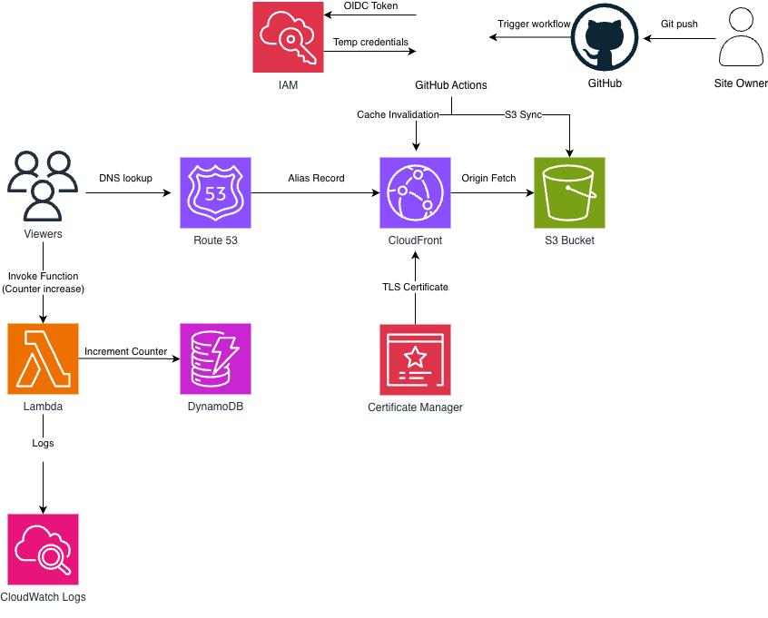

I've spent 5+ years building production applications in Angular and TypeScript, ranging from complex MES/ERP systems to real-time telemetry dashboards. Now, as an AWS Certified Solutions Architect, I also design the infrastructure behind them using Terraform and CI/CD. I thrive on the work that keeps products healthy: executing large framework upgrades, untangling release pipelines, and building reliable, automated deployments.

This site, migrated from Firebase to AWS with zero downtime. Static files on a private S3 bucket behind CloudFront, HTTPS via ACM, DNS on Route 53, and a serverless visitor counter on Lambda + DynamoDB. Infrastructure in Terraform, deployed by GitHub Actions through OIDC.
View project →